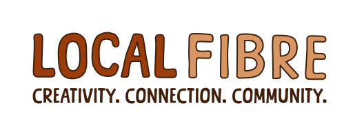

Our programmeWe give unused sewing machines a second life. Donated machines are serviced and rehomed with people and community groups who will use them, keeping them out of landfill and putting a valuable skill within reach.
Give an unused sewing machine a second life.
Instead of sitting in a cupboard or heading to landfill, your machine goes back to work.
Machines are cleaned, checked and repaired.
Each one is logged with its details and photos, so we know its history.
Ready machines go to people & community groups.
Matched in order from our waiting list and collected from West Auckland.
For yourself, or on behalf of a community group or organisation.
Donate it, and we'll make sure it gets back into a maker's hands.
hello@localfibre.co.nzScan the code or visit our website to join the waiting list.
localfibre.co.nz/repair-programme